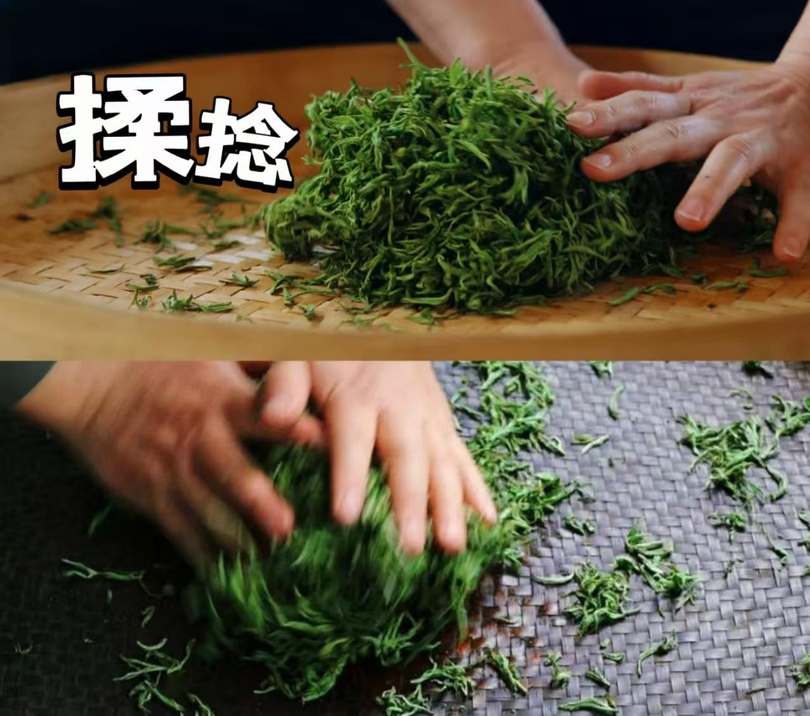

55.63%
偏好互动采茶制茶
73.13%
愿记录品茗体验
4端协同
消费 / 茶农 / 茶企 / 政府
1端触达
全链赋能
平台定位
紫金蝉茶全链数智服务平台聚焦“互动体验、产业赋能、品牌运营、数据监管”四大方向， 通过轻量化多端协同，推动紫金蝉茶从种植、生产、销售到体验的全链升级。

运营闭环
1
体验吸流
通过互动内容、线下扫码、茶博会活动、社交传播吸引用户进入平台。
通过互动内容、线下扫码、茶博会活动、社交传播吸引用户进入平台。
2
平台承接
承接采茶制茶体验、知识互动、溯源查询、商城浏览、预约报名。
承接采茶制茶体验、知识互动、溯源查询、商城浏览、预约报名。
3
全链服务
服务茶农记录、茶企管理、政府监管，实现多端数据协同。
服务茶农记录、茶企管理、政府监管，实现多端数据协同。
4
消费转化
通过积分、内容分享、茶旅体验、商品购买形成转化与复购。
通过积分、内容分享、茶旅体验、商品购买形成转化与复购。

核心能力
消费体验
互动采茶制茶、茶叶溯源、商城购买、茶旅预约、品茗分享。
产业赋能
农事记录上报、虫口监测、茶园数据查看、技术问题在线答疑。
运营管理
产销匹配、品牌动态发布、经营数据看板、监管总览。